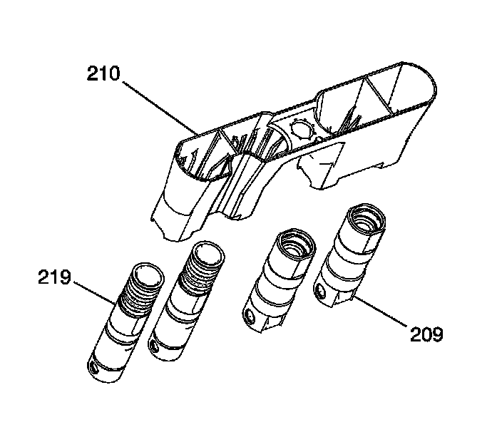
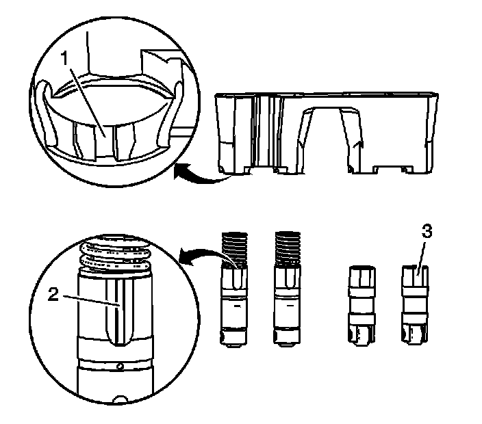
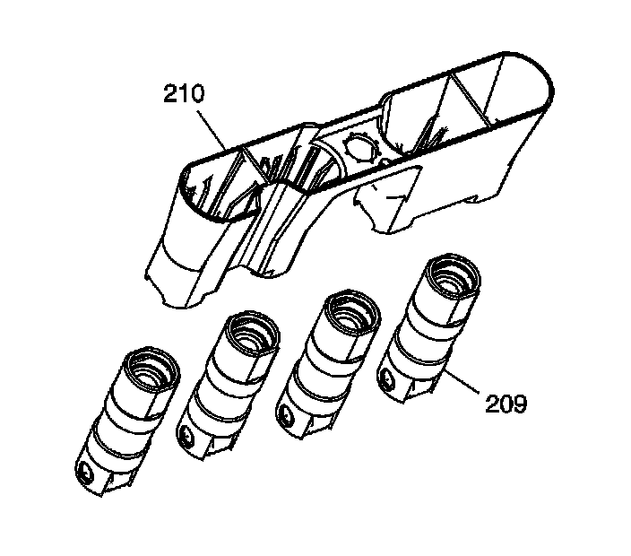
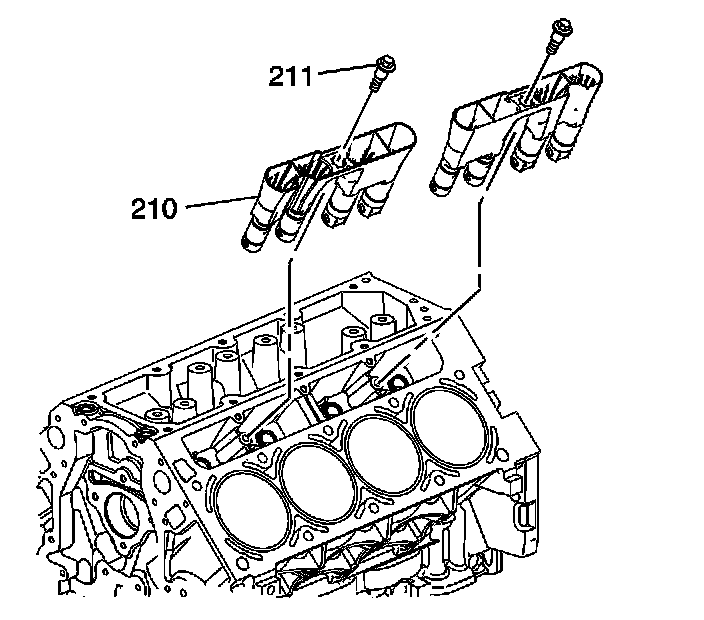

81. Valve Lifter Installation
Valve Lifter Installation (RPO L92)

Important:
^ When using the valve lifters again, install the lifters to their original locations.
^ If camshaft replacement is required, the valve lifters must also be replaced.
^ First design engines have 2 active fuel management valve lifters and 2 non-active fuel management valve lifters per guide.
^ Second design engines have 4 non-active fuel management valve lifters per guide.
Lubricate the first design engine valve lifters (209, 219) and engine block valve lifter bores with clean engine oil.

1. Insert the first design valve lifters into the lifter guides.
^ Align the flat area (3) on the top of the non-active fuel management lifter with the flat area in the lifter guide bore. Push the lifter completely into the guide bore.
^ The active fuel management lifters (4) are to be installed into the guide, with the notch in the guide (1) aligned with the raised area (2) of the lifter.

2. Lubricate the second design engine valve lifters (209) and engine block valve lifter bores with clean engine oil.
3. Insert the second design engine valve lifters into the lifter guides (210). Align the flat area on the top of the lifter with the flat area in the lifter guide bore. Push the lifter completely into the guide bore.

4. Install the valve lifters and guide assembly (210) to the engine block.
Notice: Refer to Fastener Notice.
5. Install the valve lifter guide bolts (211).
Tighten the valve lifter guide bolts to 10 N.m (89 lb in).